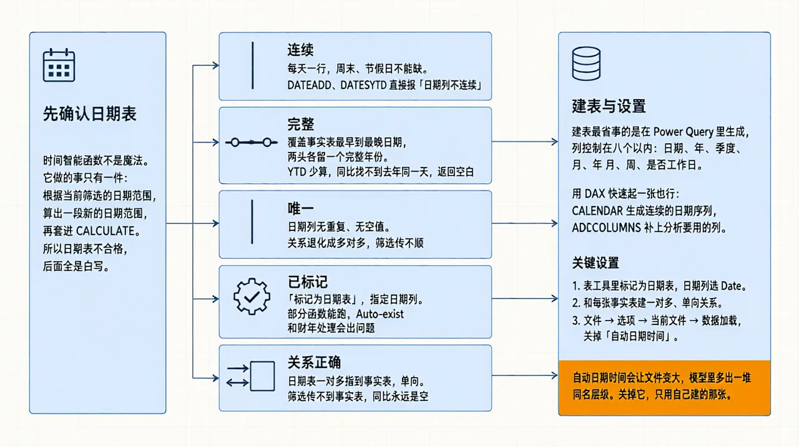
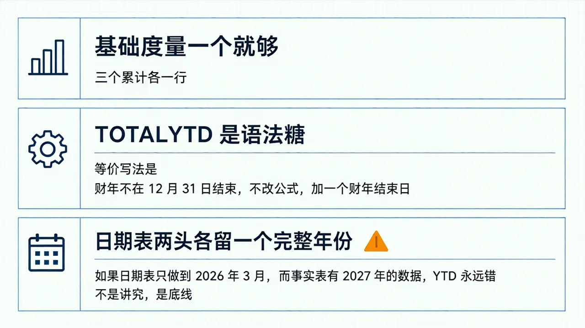
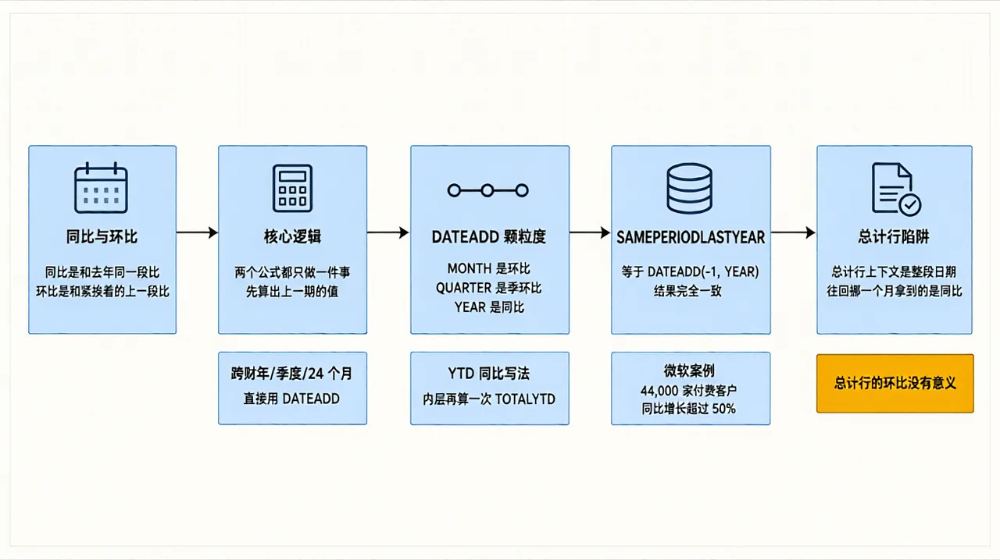
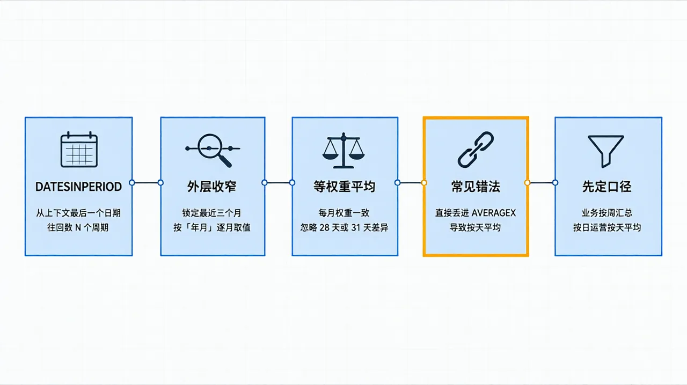

同比环比 YTD 在 DAX 里怎么写：一份可复制的公式模板
同比环比算错，九成不是公式问题，是日期表。六套度量值模板，复制就能用。

DAX 里的同比、环比、YTD，公式本身只有几行。数字对不上，九成不是公式写错了，是日期表没建对。
搜「DAX 同比环比」的人，多半已经写过一版：YTD 从 1 月 1 日算起却少几天，同比在总计行变成了和整年比，环比一放到年度汇总就失真。这篇不推导原理，直接给六套能复制的度量值，再把日期表必须满足的条件逐条列清。先给判断：时间智能函数只认合格的日期表，其余写法都是在赌。
一、先确认日期表，再写任何一个公式
时间智能函数不是魔法。它做的事只有一件：根据当前筛选的日期范围，算出一段新的日期范围，再套进 CALCULATE。
所以日期表不合格，后面全是白写。判断一张表能不能用，看五条。
| 条件 | 具体要求 | 不满足会怎样 |
|---|---|---|
| 连续 | 每天一行，周末、节假日不能缺 | DATEADD、DATESYTD 直接报「日期列不连续」 |
| 完整 | 覆盖事实表最早到最晚日期，两头各留一个完整年份 | YTD 少算，同比找不到去年同一天，返回空白 |
| 唯一 | 日期列无重复、无空值 | 关系退化成多对多，筛选传不顺 |
| 已标记 | 「标记为日期表」，指定日期列 | 部分函数能跑，Auto-exist 和财年处理会出问题 |
| 关系正确 | 日期表一对多指到事实表，单向 | 筛选传不到事实表，同比永远是空 |
建表最省事的是在 Power Query 里生成，列控制在八个以内：日期、年、季度、月、年 月、周、是否工作日。用 DAX 快速起一张也行：
日期 =
ADDCOLUMNS(
CALENDAR(DATE(2022, 1, 1), DATE(2026, 12, 31)),
"年", YEAR([Date]),
"季度", "Q" & FORMAT([Date], "Q"),
"年 月", FORMAT([Date], "YYYY-MM")
)
CALENDAR 生成连续的日期序列，ADDCOLUMNS 补上分析要用的列。
建完做三件事：在表工具里标记为日期表，日期列选 Date；和每张事实表建一对多、单向关系；到「文件 → 选项 → 当前文件 → 数据加载」里关掉「自动日期时间」。
自动日期时间会在后台给每个日期列生成一张隐藏表。文件变大，模型里还多出一堆同名层级。它能让公式「碰巧跑通」，等你换表、换写法，错误才冒出来。关掉它，只用自己建的那张。
给客户做模型时，这一步永远排在所有指标前面。做了 10 年报表，返工最多的不是公式，是日期表。这块的完整流程写在服务里，需要落地可以直接联系。

二、YTD / MTD / QTD：三行就够
基础度量一个就够：
销售额 = SUM('销售'[金额])
三个累计各一行，第二个参数必须是日期表里被标记的那一列：
销售额 YTD = TOTALYTD([销售额], '日期'[Date])
销售额 MTD = TOTALMTD([销售额], '日期'[Date])
销售额 QTD = TOTALQTD([销售额], '日期'[Date])
TOTALYTD 是语法糖，等价写法是：
销售额 YTD = CALCULATE([销售额], DATESYTD('日期'[Date]))
财年不在 12 月 31 日结束，不改公式，加一个财年结束日：
销售额 财年 YTD =
CALCULATE([销售额], DATESYTD('日期'[Date], "6/30"))
6 月 30 日结束的财年，7 月 1 日就是新财年的第一天。所有 YTD 自动按这个口径切。
还有一个容易忽略的点：TOTALYTD 算的是「本年 1 月 1 日到当前日期」。如果日期表只做到 2026 年 3 月，而事实表有 2027 年的数据，YTD 永远错。日期表两头各留一个完整年份，不是讲究，是底线。

三、DAX 同比环比：公式很短，前提很长
同比是和去年同一段比，环比是和紧挨着的上一段比。两个公式都只做一件事：先算出上一期的值。
同比：
销售额 去年同期 =
CALCULATE([销售额], SAMEPERIODLASTYEAR('日期'[Date]))
销售额 同比 % =
VAR 本期 = [销售额]
VAR 同期 = [销售额 去年同期]
RETURN DIVIDE(本期 - 同期, 同期)
环比：
销售额 上期 =
CALCULATE([销售额], DATEADD('日期'[Date], -1, MONTH))
销售额 环比 % =
VAR 本期 = [销售额]
VAR 上期 = [销售额 上期]
RETURN DIVIDE(本期 - 上期, 上期)
DATEADD 的第三个参数决定「上一期」的颗粒度：MONTH 是环比，QUARTER 是季环比，YEAR 是同比。SAMEPERIODLASTYEAR 本身就等于 DATEADD(-1, YEAR)，两者结果完全一致。要跨财年、按季度挪、或者往前推 24 个月，直接用 DATEADD。
这里有个几乎人人都踩的坑：总计行的环比没有意义。 矩阵里每个月的行有自己的日期上下文，DATEADD 往回挪一个月，结果是对的。总计行的上下文是整段日期，往回挪一个月，拿到的是「去年同一段」——你看到的其实是同比。
所以环比只在月的行上看，总计行留空，或者换成同比。
同比在总计行是成立的：整年对整年，季度对季度。年度汇总放同比、月度明细放环比，这是汇报里最稳的分工。微软自己在 11 月 17 日的 Fabric 博客里报客户数，用的也是这个口径——44,000 家付费客户，同比增长超过 50%。
YTD 的同比要单独写，不能拿两个 YTD 相减了事：
销售额 YTD 同比 % =
VAR 本期 = [销售额 YTD]
VAR 同期 = CALCULATE([销售额 YTD], SAMEPERIODLASTYEAR('日期'[Date]))
RETURN DIVIDE(本期 - 同期, 同期)
内层再算一次 TOTALYTD，才会把去年那段也截到同一天，而不是拿去年整年比今年前几个月。

四、移动平均：按月平均，不按天平均
移动平均用 DATESINPERIOD。它从上下文里最后一个日期往回数 N 个周期，返回一段连续日期。
按月平均的正确写法：
销售额 3 月移动平均 =
CALCULATE(
AVERAGEX(VALUES('日期'[年 月]), [销售额]),
DATESINPERIOD('日期'[Date], MAX('日期'[Date]), -3, MONTH)
)
外层把上下文收窄到最近三个月，内层按「年 月」逐月取值再平均。每个月的权重一样，不管这个月有 28 天还是 31 天。
常见错法是把 DATESINPERIOD 直接丢进 AVERAGEX：
销售额 3 月移动平均（错） =
AVERAGEX(
DATESINPERIOD('日期'[Date], MAX('日期'[Date]), -3, MONTH),
CALCULATE([销售额])
)
这样是按天平均。有销售的日子只有几天，其余全是 0，平均值被大幅拉低。月底月初看这张图，趋势会完全反过来。
业务按周汇总，就把粒度换成周；按日运营，按天平均才有意义。先定口径，再选公式。

五、六个最常见的时间智能错误
- 日期表没标记。 函数当时能跑，Auto-exist 和财年切换时结果不可预期，换模型才发现。
- 日期列不连续。 缺周末、缺节假日，
DATEADD直接报错。 - 关系方向反了，或者用了多对多。 筛选传不到事实表，同比一直是空。
- 日期表年份不完整。 YTD 少算，同比找不到去年同一天，返回空白而不是报错，最容易被忽略。
- 自动日期时间没关。 模型里多出一批隐藏表，写公式时容易引用错。
- 用
/代替DIVIDE。 分母为 0 直接报错，整页视觉对象一起崩；DIVIDE返回空白，报表不崩。
常见问题
同比一定要用日期表吗？能不能直接用事实表的订单日期？
不能。时间智能函数要求日期列连续、无重复，事实表的订单日期两头都有缺口。用事实表日期，要么直接报错，要么在数据稀疏时悄悄算错，后者更麻烦。
SAMEPERIODLASTYEAR 和 DATEADD 到底选哪个？
标准自然年、只比去年同期，用 SAMEPERIODLASTYEAR，语义清楚。财年错位、按季度或 24 个月挪动，用 DATEADD。两者底层是同一套逻辑，不必纠结性能。
卡片图里的同比为什么是空白？
卡片图没有日期筛选上下文，SAMEPERIODLASTYEAR 拿不到「本期」的范围。给页面加日期切片器并设默认值，或者在度量值里用 VAR 固定结束日期。
移动平均按天和按月，差别有多大？
日销波动大的业务，按天平均会被大量零销售日拉低，趋势看起来比实际差。月度汇报统一按月平均，只有日报表按天。
我的判断
这六套公式属于必学。DAX 时间智能是 Power BI 的基本功，汇报里八成的口径都由这几行撑起来，学会了就不用每周手工比对 Excel。
真正值得投入时间的地方不是公式，是日期表。一张合格、共用、标记好的日期表，前期多花半天，后面每个项目都省事。手上公开的看板都是同一套日期表模板，放在案例里。
三件事别做：别用自动日期时间省事；别在度量值里写死 DATE(2026, 1, 1)，除非做的是固定区间报表；别把同比和环比塞进同一张图。同比是董事会语言，看的是年度位置；环比是运营语言，看的是这个月有没有变好。放一起，两条线的故事会互相打架。
团队里如果还没有统一日期表，先建表，再谈指标。顺序反了，后面每个报表都要返工。